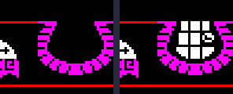
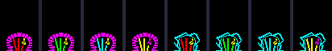
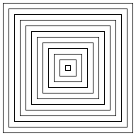
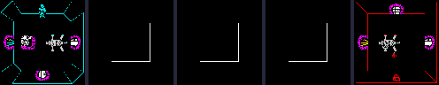
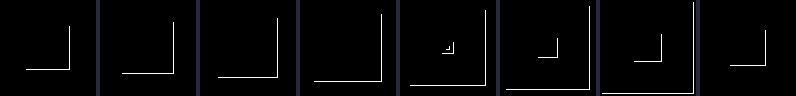

| Doors, keys and trapdoors |
A door in Atic Atac is one sixteen-byte record whose two eight-byte halves stand in the two rooms it joins. Its type says what kind of door it is -- plain, locked, timed, a trapdoor, a secret passage for one character, the way out -- and picks the handler that the room's list dispatches it to on every pass. This page reads the kinds from the game, then follows the doors that change: the timed doors, chosen at random when a game starts and opening and shutting by themselves; the locked doors and their keys; the characters' doors; and the trapdoors. Everything was run through the game's own code in SkoolKit's simulator, from the first game after loading.
| Offset | In a door's half |
|---|---|
| +$00 | type: which kind of door (and, less $A1, which graphic draws it) |
| +$01 | the room this half stands in |
| +$02 | where the player arrives coming through the other way: the low nibble twice is added to this half's x, the high nibble twice taken from its y |
| +$03, +$04 | x and y of the door's bottom-left corner |
| +$05 | bits 7-5 the drawing mode, which is also the wall (0 north, 4 south, 3 east, 7 west); bit 3 shut; bit 2 solid; bits 1-0 how it meets the screen |
| +$06, +$07 | its walk box (see movement) |
The two halves are eight bytes apart, so DOOR_OTHER_SIDE finds the far side by flipping bit 3 of the address, and OPEN_DOOR and SHUT_DOOR always set or clear bit 3 of +$05 on both, so the two sides never disagree. Furniture uses the same record, though nothing passes between its halves (149 halves of the template have types that are not doors).
A room record of type t is dispatched from entry $A2 + t of ACTOR_HANDLERS (DISPATCH_FROM_LIST starts its lookup at $802A). The door types, their handlers read from that table, and how many record halves of each there are in the template and in the first game once START_GAME has run:
| Type | What | Handler | Halves in the template | In the first game |
|---|---|---|---|---|
| $01 | cave door, always open | DOOR | 86 | 44 |
| $02 | door, always open | DOOR | 164 | 70 |
| $03 | the big door frame at a staircase's top; a wider doorway | BIG_DOOR | 6 | 6 |
| $08 | red door | DOOR_LOCKED_A | 18 | 18 |
| $09 | green door | DOOR_LOCKED_A | 22 | 22 |
| $0A | cyan door | DOOR_LOCKED_A | 20 | 20 |
| $0B | yellow door | DOOR_LOCKED_A | 22 | 22 |
| $0C | red cave door | DOOR_LOCKED_B | 6 | 6 |
| $0D | green cave door | DOOR_LOCKED_B | 6 | 6 |
| $0E | cyan cave door | DOOR_LOCKED_B | 4 | 4 |
| $10 | grandfather clock: a door for the knight only | DOOR_KNIGHT | 12 | 12 |
| $17 | bookcase: for the wizard only | DOOR_WIZARD | 10 | 10 |
| $19 | trapdoor, open | TRAPDOOR | 11 | 11 |
| $1A | barrel: for the serf only | DOOR_SERF | 10 | 10 |
| $20 | timed door, shut | TIMED_DOOR_SHUT | 0 | 94 |
| $22 | timed cave door, shut | TIMED_DOOR_SHUT | 0 | 42 |
| $24 | the A.C.G. door | ACG_DOOR | 2 | 2 |
Types $18 and $20-$23 are not in the template: the game makes them as it runs.
DOOR asks PLAYER_AT_DOOR whether the player is in the door's box -- 17 pixels each way, halved across the door -- and, if he is, calls ENTER_ROOM: to the other half; its room becomes the player's; its +$02 gives where he appears; SET_ARRIVAL_HEADING gives him a heading of 32 away from the arrival door's wall, from ARRIVAL_HEADINGS:
| Arrival door's wall | Heading (x, y) | He walks |
|---|---|---|
| north (mode 0) | 0, 32 | down |
| east (mode 3) | -32, 0 | left |
| south (mode 4) | 0, -32 | up |
| west (mode 7) | 32, 0 | right |
and the low nibble of his +$02 is set to 15. Then the room is drawn (see drawing). While the nibble counts down, once a frame, the controls are ignored and he walks in on his own, and no door can fire, so he cannot bounce straight back out; a run on the movement page shows the fifteen frames. Creatures in the old room stay there; a weapon in flight vanishes, since it is no longer in the player's room.
Once, at the start of a game, CHOOSE_TIMED_DOORS walks every door record. Where both halves are a plain door ($02) or a plain cave door ($01), it reads a byte from a pointer made of TICKS' low byte and FRAMES' low four bits with bit 4 set -- an address in the ROM, $1000-$1FFF, stepped on a byte per record -- and if the byte is below $70, makes both halves a shut timed door ($20) or timed cave door ($22). The ROM is the random numbers. In the first game after loading TICKS is 0 and FRAMES' low byte $6F when it runs, so it reads from $1F00 on, and it made 47 of the 78 plain doors and 21 of the 42 plain cave doors timed (68 doors in all, counted pair by pair from the records before and after). The same doors, every first game: FRAMES is frozen on the title screen. Room $00 has 2 of them.
A timed door's handler (TIMED_DOOR_SHUT or TIMED_DOOR_OPEN) does nothing on odd passes; on even passes it counts down one shared counter, DOOR_WAIT. The door that finds it at zero calls TOGGLE_TIMED_DOOR: the counter back to 94, the picture XORed off, bit 0 of the type flipped on both halves ($20 and $21, $22 and $23), the door opened or shut to match, the new picture drawn, and a rasp. Only the doors in the player's room are dispatched, so only they count down. Followed in room $00, the knight standing still for 700 passes:
| Pass | Wall | Became | TICKS |
|---|---|---|---|
| 64 | south | timed door, shut | 191 |
| 158 | west | timed door, shut | 285 |
| 254 | south | timed door, open | 381 |
| 348 | west | timed door, open | 475 |
| 444 | south | timed door, shut | 571 |
| 538 | west | timed door, shut | 665 |
| 634 | south | timed door, open | 761 |
The toggles came 94 – 96 passes apart: with 2 timed doors in the room both count the one counter down on every even pass, so it empties twice as fast as it would for one, and they take turns. The south door open and shut:

Room $00's south door, open and shut.
An open timed door will not shut while the player is in a doorway: at zero, TIMED_DOOR_OPEN looks at IN_DOORWAY and just acts as a door. Staged: the knight put in room $00's south doorway, at y $A8, below the rectangle. The counter reached zero and stayed there for 20 passes with the door still open (IN_DOORWAY 1); put back in the middle of the room, the door shut 1 pass later.
Types $08-$0B are locked doors and $0C-$0F locked cave doors, their colour the low two bits of the type through DOOR_COLOURS. All four colours are one graphic with four colour tables; drawn by the game, the doors then the cave doors:

Types $08-$0F, drawn by the game's drawers.
| Low bits | Types | Colour | Door halves | Cave door halves | |
|---|---|---|---|---|---|
| 0 | $08, $0C | $42 | red | 18 | 6 |
| 1 | $09, $0D | $44 | green | 22 | 6 |
| 2 | $0A, $0E | $45 | cyan | 20 | 4 |
| 3 | $0B, $0F | $46 | yellow | 22 | 0 |
On every pass DOOR_NEEDS_KEY asks FIND_CARRIED for sprite $81 (a key) in the door's colour among the three carried things. Not carried: SHUT_DOOR, and the walk test ignores its doorway. Carried: OPEN_DOOR, and PLAYER_AT_DOOR as for any door; going through, DOOR_LOCKED_A sets both halves to $02 (DOOR_LOCKED_B to $01) -- a plain door, open to anyone, for the rest of the game -- and the key is kept. Room $00's cyan door, with its key given and taken away (staged in the inventory):
| The door | |
|---|---|
| At the start, no key | shut |
| The cyan key written into slot 1, two passes later | open, both halves: the same |
| The slot emptied again, two passes later | shut |
The movement page shows the knight going through with the key: the door becomes type $02 on both halves. Where the keys are is chosen by PLACE_KEYS at the start of a game, before the template is copied, from three tables of eight rooms; TICKS is always 0 at that moment, so the green and red keys use the same index and move together. The yellow key never moves. The first game's rooms in bold:
| Key | Table | Index | Candidates | First game |
|---|---|---|---|---|
| green | RANDOM_ROOMS_ONE | FRAMES AND 7 | $05, $06, $07, $6D, $25, $24, $23, $22 | room $22 |
| red (and the mummy) | RANDOM_ROOMS_TWO | (FRAMES + TICKS) AND 7 | $17, $13, $09, $0D, $89, $87, $80, $85 | room $85 |
| cyan | RANDOM_ROOMS_THREE | (FRAMES' high byte + TICKS' high byte) AND 7 | $53, $8F, $41, $94, $33, $91, $39, $4C | room $91 |
| yellow | (the template) | never moved | room $66 |
DOOR_KNIGHT, DOOR_WIZARD and DOOR_SERF -- a grandfather clock, a bookcase and a barrel -- take the character's first sprite code from the player's and ask whether what is left is under 16. The right character gets OPEN_DOOR and an ordinary doorway; anyone else gets SHUT_DOOR and a picture. Each character was staged in room $09 below its clock (at $30, $27, in the north wall, leading to room $17) and walked up into it:
| Character | What happened |
|---|---|
| knight | through, into room $17, after 24 frames |
| wizard | stopped at y $31 under it, the clock shut (bit 3 of its +$05 set) |
| serf | stopped at y $31 under it, the clock shut (bit 3 of its +$05 set) |
All 11 trapdoors start open, type $19. The open trapdoor's handler (TRAPDOOR) jumps to TRAPDOOR_FALL unless the byte RUNNING_SUM is zero, when it closes instead (the tail of TRAPDOOR_CLOSED, which flips the type to $18). A closed one opens again whenever TICKS' low byte is zero, every 256 passes. RUNNING_SUM is a running sum of FRAMES and TICKS that MAIN_LOOP keeps at the end of every pass. The trapdoor in room $03, watched for 60 seconds with the knight standing well away from it: it closed 8 times and was open 48% of the time, each time opening on the pass after TICKS' low byte came round to zero:
| When | It became | TICKS |
|---|---|---|
| 5.6 s | closed | $0165 |
| 9.5 s | open | $0201 |
| 10.1 s | closed | $021B |
| 15.7 s | open | $0301 |
| 24.8 s | closed | $0471 |
| 28.3 s | open | $0501 |
| 31.3 s | closed | $057A |
| 34.6 s | open | $0601 |
| 36.3 s | closed | $0646 |
| 40.8 s | open | $0701 |
| 43.0 s | closed | $0756 |
| 47.2 s | open | $0801 |
| 49.2 s | closed | $0856 |
| 53.4 s | open | $0901 |
| 57.9 s | closed | $09BA |
| 59.7 s | open | $0A01 |
TRAPDOOR_FALL asks PLAYER_AT_DOOR with a box of 24 by 12. On it, the play area is cleared and drawn as entry $96 of the room table -- twelve nested rectangles -- and for 128 frames a falling tone plays while the middle four attribute cells are white one frame in eight and black otherwise, spread outwards by the spiral fill; then ENTER_ROOM, through the trapdoor's other half, which is the landing place in the room below. Staged: the knight put in room $03 above the trapdoor and walked down onto it (12 frames). The fall took 161 frames -- 128 steps, each waiting for FRAMES to move, and some of the tone's beeps outlast a frame -- and he landed in room $65 at ($40, $6E) (the trapdoor's other half says room $65).
The rectangles are drawn in the fall's own colour, black on black, so they are seen only where the attributes are white: each step the spiral fill copies every cell's colour from the one inside it, so the white pulses from the middle travel outwards a ring of cells a step, lighting whatever part of a rectangle lies in a white ring -- here the bottom and right-hand sides, where the lines and the cells line up. The pixels on their own, then the play area as shown at the start of the fall, after 8, 64 and 120 steps, and in the room below; then eight steps in a row, 40 to 47:

The fall's pixels, ink only.

The fall.

Steps 40-47.
Inferred, or not tried: